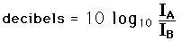
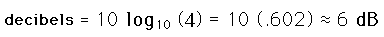

Effect of Doubling Distance
If the inverse square law applies, then doubling the distance from a point sound source will cause the intensity to drop by 6 decibels. The intensity difference in decibels between two sounds A and B is given by

If sound B is measured at double the distance of sound A from a point source so that it follows the inverse square law, then its intensity will be one fourth that of A. The difference in decibels is then

In a real room, reverberation will contribute to the sound field so that the sound will not drop off as rapidly as the inverse square law predicts.
|